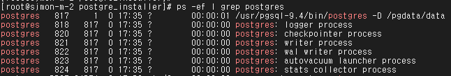
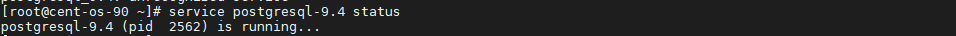
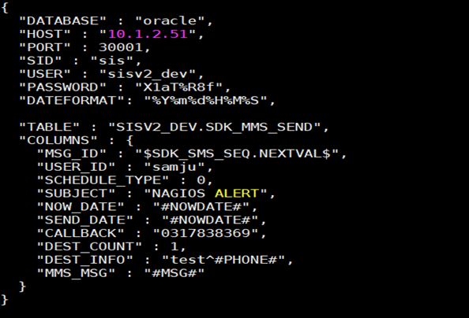
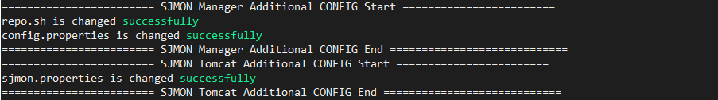

Linux 서버에 SJMON Manager 설치
SJMON_for_Linux.zip 파일을 다운로드 받아, 원하는 디렉터리에 압축 해제 합니다. 권장 위치는 /pgdata 입니다.
[root@sjmon-m-2 ~]# cd /pgdata
[root@sjmon-m-2 pgdata]# ls -l
total 1507088
-rw-r--r--. 1 root root 1543255818 Apr 7 13:26 SJMON_for_Linux.zip
[root@sjmon-m-2 pgdata]# unzip SJMON_for_Linux.zip
Archive: SJMON_for_Linux.zip
파일 압축 해제 후 폴더 구조는 아래와 같습니다.
1. Postgresql 설치
postgre_installer 디렉토리로 이동하여, postgresql_install.sh을 실행합니다. shell 파일에 실행 권한이 없다면 chmod +x postgresql_install.sh 을 수행하여 실행 권한을 부여합니다.
000 을입력하여 일괄 진행합니다. 단계별로 개별 진행하고자 하는 경우에는 AAA 부터 KKK 까지 순차적으로 입력합니다.
각 단계 설명은 아래와 같습니다.
| 단계 | 설명 |
|---|---|
| [AAA] | /tmp 폴더에 있는 RPM파일을 install 합니다 |
| [BBB] | FILE_PATH(/pgdata/data)폴더가 없는 경우 생성하고 postgres 권한을 부여합니다. |
| [CCC] | 설치에 필요한 라이브러리를 업데이트 합니다. |
| [DDD] | 데이터베이스를 생성합니다. |
| [EEE] | iptables에 SJMON에 사용되는 포트를 추가합니다. |
| [FFF] | postgresql DB Config를 SJMON 서비스를 위한 형태로 변경합니다. |
| [GGG] | postgresql DB profile 설정을 합니다. |
| [HHH] | 현재 postgresql DB가 설치된 경로(/pgdata/data)로 DB 셋팅을 합니다. |
| [III] | postgresql 서비스를 재시작합니다. |
| [JJJ] | postgresql 서비스가 부팅 시 자동으로 시작하도록 설정합니다. |
| [KKK] | DB 테이블스페이스를 생성하고 스키마와 메타데이터를 생성합니다. |
| [000] | [AAA] 부터 [KKK]까지의 모든 단계를 한번에 설치합니다. |
설치가 자동으로 진행되며, 진행이 완료되면 “Postgre is successfully installed”라는 message와 함께 shell이 종료됩니다.

PostgreSQL Database가 정상적으로 구동되었는지 확인
- 실행 중인 프로세스로 확인하는 방법:
ps -ef | grep postgres

-
서비스 상태 조회 명령어로 확인하는 방법
-
centos 6의 경우
service postgresql-9.4 status

- centos 7의 경우
systemctl status postgresql-9.4혹은su - postgres -c "/usr/pgsql-9.4/bin/pg_ctl status"
2. Repository 구성
기본 설치 위치 (기본값 /pgdata) 에 있는 sjmon_file.tar 파일의 권한을 sjmonv2user 로 변경한 후, sjmonv2user 의 Home Directory로 옮깁니다.
sjmonv2user로 로그인하여 파일의 압축을 해제합니다.
압축 해제한 sjmon_file 폴더 내 구조는 아래와 같으며, Client 설치 및 Viewer를 위한 repository로 활용됩니다.
각 폴더에 대한 설명은 아래와 같습니다.
| 폴더명 | 설명 |
|---|---|
| all_files_* | SJMON Client 수동 설치를 위한 파일 존재 |
| COMMON | Client 설치 시 필요한 common 파일 존재 |
| deploy | Viewer 에서 Deploy 기능 사용 시 활용되는 폴더 |
| installer | Client 설치 시 사용되는 Auto Installer 파일 존재 |
| INVENTORY | Viewer에서 Version Check 기능 사용 시 활용되는 파일 존재 |
| OS | Client 설치 시 사용되는 OS 관련 파일 존재 |
| pg_csv, pm_result | PM Report 수동 업로드 시 활용되는 폴더 |
| pm_script | Auto PM 기능 사용 시 사용되는 기본 PM Script 파일 존재 |
3. Manager Installer 를 통해 Manager & Tomcat & Scouter 설치
기본 설치 위치 (기본값 /pgdata) 로 이동하여 아래 명령을 수행합니다. shell 파일에 실행 권한이 없다면 chmod +x managerInstall.sh 을 수행하여 실행 권한을 부여합니다. Postgresql 기본 포트는 5432, 매니저 기본 포트는 43001입니다.
[Usage]
./managerInstall.sh all [매니저 IP] [PostgreSQL 포트] [매니저 포트]
[Example]
./managerInstall.sh all localhost 5432 43001
발급받은 License 정보를 입력하
Tomcat 과 Manager 설치가 완료되면, Scouter 설치 여부를 선택한다. Default는 n 이며, y 입력 시 Scouter 설치를 진행하고 n 입력 시 Scouter 설치 없이 종료한다.
Manager, Tomcat, Scouter 가 정상적으로 구동된 경우 아래와 같이 프로세스를 확인할 수 있습니다.
- Manager
- Tomcat
- Scouter

4. Viewer 접속 확인
Chrome web browser에 http://localhost:9090을 입력하여 SJMON Viewer에 접속합니다. 기본 계정 ID는 admin, 비밀번호는 IBMP@ssw0rd 입니다.
Nagios 연동 설치
Nagios 연동 설치 전 확인 사항
SJMON과 Nagios를 연동하려면 사전에 CHECKMK 1.4.x 혹은 1.5.x 가 Manager서버에 설치되어 있어야 합니다. 설치가 완료된 상태에서 아래 순서에 따라 진행해주세요.
또한, Database를 이용한 SMS을 사용 할 경우 설치 전 다음 파일을 설정하여 주시기 바랍니다.
dbconfig.json(=Database를 이용한 sms 설정파일 (sjmon_noti_script에 위치))
| 설정 항목 | 항목 설명 |
|---|---|
| DATABASE | DATABASE 종류명 (현재 지원 되는 DB : MYSQL, POSTGRESQL, ORACLE) |
| HOST | 연결되는 DB HOST 주소 ※ postgresql은 명령어 특성상 외부IP의 입력이 불가능합니다. (localhost(=127.0.0.1)만 입력 가능) |
| PORT | 연결되는 DB PORT |
| SID | 연결 할 SID명 (※ Oracle에서 사용) |
| USER | 연결 할 DB USER명 |
| PASSWORD | 연결 할 DB USER의 PASSWORD |
| DATEFORMAT | 현재 날짜 사용 시 적용되는 DATE 포맷 (%Y : 연도, %m: 월, %d: 일, %H: 시간, %M: 분, %S: 초) |
| DBNAME | 연결 할 DATABSE명 (※ Oracle에서 사용 하지 않음) |
| TABLE | 연결 할 DATABSE의 TABLE명 |
| COLUMNS | TABLE 컬럼 및 설정 컬럼값. ※ 다음 값을 컬럼값에 입력 시 지정되는 특수값을 컬럼값으로 넣을 수 있습니다. 컬럼값 : ' ' 래핑하여 설정된 값 사용 (ex. samju → 'samju') $컬럼값$ : ' '으로 래핑 없이 값 $와 $ 사이의 값 그대로 사용 (ex. $SDK_SMS_SEQ.NEXTVAL$ → SDK_SMS_SEQ.NEXTVAL) #컬럼값# : #와 # 사이의 값에 해당하는 값을 내부의 변수 (=내부에서 전닯받은 값으로 사용)로 설정값을 불러와서 사용 (ex. #MSG# → 'NAGIOS ERROR MESSAGE') |
- Postgresql 을 연결하는 예시 화면입니다.
COLUMNS내에 컬럼명과 컬럼값을 json 형식으로 입력합니다.
- Mysql 예시
- Oracle 예시

Nagios 연동 스크립트 실행
매니저 설치 위치(기본값 /pgdata) 에 있는 Nagios_for_Sjmon.tar 파일을 압축해제 합니다.
압축해제 후 nagios폴더가 생성된 것을 확인할 수 있습니다. SJMON과 Nagios를 연동하기 위한 설정 파일이 존재합니다.
| 폴더 및 파일명 | 설명 |
|---|---|
| nagios_plugin_install.sh | 설치 자동화 스크립트 |
| sjmon_cfg_for_nagios | 설정 자동화 스크립트 (nagios_plugin_install.sh에 연결 되어있습니다.) |
| sjmon | NAGIOS 연동 프로그램의 실행 및 설정 파일 모음 |
| sjmon_mk_dep_install | NAGIOS 연동 프로그램 실행을 위한 종속 라이브러리 모음 |
| sjmon_mk_config | NAGIOS 연동을 위한 CheckMk의 SJMON 전용 화면 설정 파일 모음 |
| sjmon_noti_script | SJMON Threshold 전용 Notification 스크립트 모음 |
nagios 폴더 내에 있는 설치 shell을 실행합니다.
[Usage]
./nagios_plugin_install.sh <설치 옵션> <CHECKMK SITE명> <Apache 포트> <SJMON과 통신 할 포트>
<CHECKMK AUTOMATION 계정명> <SJMON ADMIN ROLE과 연결 될 CHECKMK ROLE명>
<SJMON USER ROLE과 연결 될 CHECKMK ROLE명>
[Example]
각 옵션에 대한 설명입니다. 옵션 없이 설치를 진행할 경우 입력요청에 따라 진행합니다.
- 다음 두 가지 옵션 중 한 가지를 입력합니다. [1] MAKE NEW SITE : CHECKMK 신규 SITE 생성 [2] USE EXIST SITE : CHECKMK에 이미 등록 된 SITE 사용
- CHECKMK SITE명은 입력 후 Enter를 누릅니다. (DEFAULT가 없기 때문에 반드시 입력하여야 합니다.)
- Apache 포트는 DEFAULT로 80 값이 입력되어 있고, 수정을 원하는 경우 Port를 입력한 뒤 Enter를 누릅니다. 설정 포트 확인은
/etc/httpd/conf/httpd.conf - SJMON과 통신 할 포트는 DEFAULT로 44001 값이 입력되어 있고, 수정을 원하는 경우 Port를 입력한 뒤 Enter를 누릅니다.
- automation account는 DEFAULT로 automation(=SITE 초기 설정 계정)이 입력되어 있고, 수정을 원하는 경우 수정 할 automation account를 입력한 뒤 Enter를 누릅니다.
- Admin Role(=SJMON ADMIN ROLE과 연결 될 CHECKMK ROLE)은 DEFAULT로 admin(=SITE 초기 등록 된 권한)이 입력되어 있고, 수정을 원하는 경우 수정 할 Admin Role을 입력한 뒤 Enter를 누릅니다.
- User Role(=SJMON USER ROLE과 연결 될 CHECKMK ROLE)은 DEFAULT로 user(=SITE 초기 등록 된 권한)이 입력되어 있고, 수정을 원하는 경우 수정 할 Admin Role을 입력한 뒤 Enter를 누릅니다.
설치 시 적용되는 내용은 아래와 같습니다.
- CHECK_MK SITE 체크 및 생성
- NAGIOS – SJMON 연동 전용 프로그램 설치 및 설정
- SJMON DEFAULT 계정(admin, test) NAGIOS에 추가
- NAGIOS에 SJMON 전용 설정 화면 추가
- SJMON 전용 NOTIFICATION 스크립트 추가
- SJMON 매니저 NAGIOS 연동 항목 설정
[설치 진행 예시]
설치 전 SJMON MANAGER, TOMCAT을 중지시킵니다.
NAGIOS 연동 전용 프로그램에 대한 필수 라이브러리를 설치가 진행됩니다.
NAGIOS 연동프로그램 설정파일인 config.json이 자동으로 설정 됩니다.
SJMON DEFAULT 계정(admin, test)이 NAGIOS에 추가됩니다.

※ 이미 등록 된 계정이라면 다음 메시지가 출력 됩니다.
Manager와 연동할 수 있도록 repo.sh, config.properties의 NAGIOS 연동 설정 정보를 수정합니다. Viewer와의 연동을 위해서도 Tomcat의 sjmon.properties의 설정 정보를 수정합니다.

※ NAGIOS 연동 설정에 문제가 발생하였을 경우 다음 메시지가 출력 됩니다.
설치 및 설정이 모두 완료된 후 SJMON Manager와 Tomcat은 자동으로 시작됩니다.
SJMON Manager와 NAGIOS 연동 프로그램이 연결되기 까지 약 1분 소요됩니다. manager 폴더 내의 로그에서 연결여부를 확인할 수 있습니다.
[설정 파일 수동 확인]
NAGIOS 연동프로그램 설정파일인 config.json을 열어 다음 형식으로 등록되었는지 확인합니다. 해당 파일의 기본 위치는 /omd/sites/사이트명/sjmon 입니다.
각 항목에 대한 내용은 다음과 같습니다.
| 분류 | 설정 항목 | 항목 설명 |
|---|---|---|
| BASE | SITE | 연동 대상이 되는 CHECKMK SITE |
| APACHE_PORT | APACHE 서버의 접속 Port (DEFAULT : 80) | |
| SJMON_PORT | SJMON Manager와 연결되는 Port (DEFAULT : 44001) | |
| ROLE_ADMIN | SJMON ADMIN ROLE과 연결 할 CHECKMK의 ROLE명 (DEFAULT : admin) | |
| ROLE_USER | SJMON USER ROLE과 연결 할 CHECKMK의 ROLE명 (DEFAULT : user) | |
| LOGLEVEL | NAGIOS 연동 프로그램 로그 출력 레벨 (Default : error) | |
| WEBAPI | AUTOMATION_ID | SITE에 등록된 AUTOMATION 계정 ID (Default : automation) |
| AUTOMATION_SECRET | SITE에 등록된 AUTOMATION SECRET(=암호) |
manager/config.properties파일이 다음 형식으로 등록되었는지 확인합니다.
각 설정 항목에 대한 설명은 아래와 같습니다.
| 설정값 | 설명 |
|---|---|
| nagios.sched | Nagios 연동 사용 여부 : Y, N |
| nagios.conn.port | Nagios 연동 프로그램 연결 Port (config.json의 BASE.PORT 동일) |
| nagios.check.retry | Nagios 연동 프로그램 상태 재확인 시도 횟수 |
| nagios.sched.hoststat | host상태 체크 주기 (ex: 0 0/1 * * * ?) |
| nagios.sched.datasync | Nagios 호스트, 유저, 룰 상태 체크 주기 (ex: 0 0/2 * * * ?) |
| nagios.sched.threshold | Sjmon Threshold 상태 체크 및 전송 주기 (ex: 0 0/1 * * * ?) |
- 매니저의 repo.sh에 NAGIOS SITE명이 올바르게 입력되었는지 확인합니다.
※ NAGS_SITE입력되는 SITE명은 반드시
/omd/sites/사이트명/sjmon/config.json의BASE.SITE와 일치해야 합니다.
Nagios 연동 후에는 Viewer를 재로그인해야 관련 메뉴를 확인할 수 있습니다.
최초 설치 이후 Scouter 추가 설치 시
최초 설치 시 Scouter를 설치하지 않는 경우에는, 필요 없는 기능으로 판단하여 관련 폴더 및 파일을 모두 삭제합니다. Scouter를 추가로 설치하고자 하는 경우, Scouter_for_Linux.zip 파일을 다운로드 받아, 기존 매니저 설치 위치(기본값 /pgdata)에 압축 해제 합니다.
# unzip Scouter_for_Linux.zip
scouter/server/conf/scouter.conf 파일을 열어, ext_plugin_sjmon_target_ip 에 Manager IP를, ext_plugin_sjmon_target_port에 Manager 연결 Port를 입력합니다.